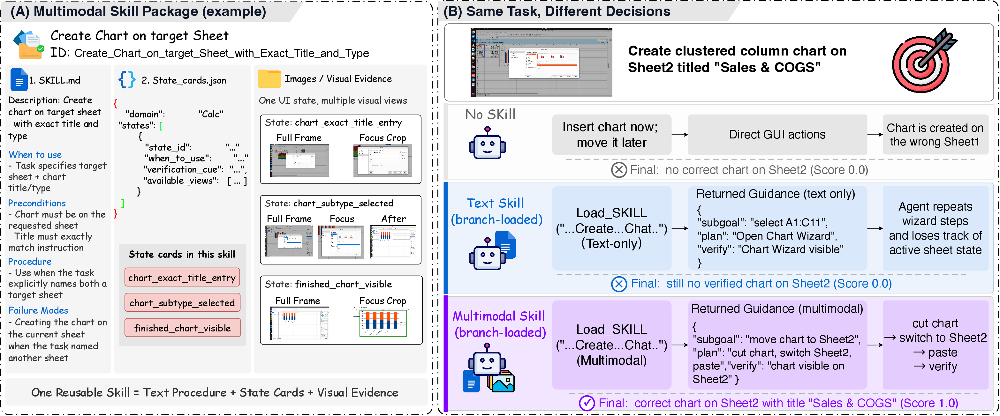
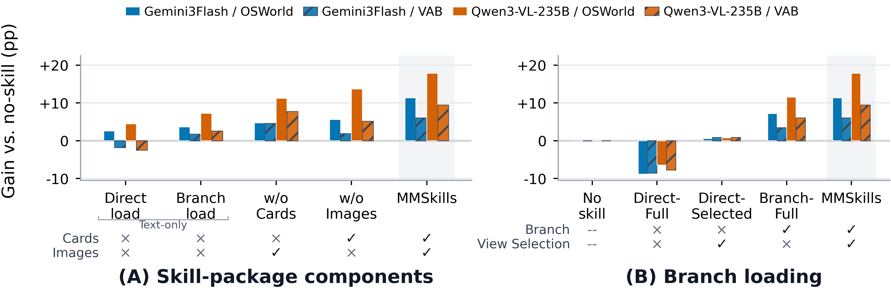
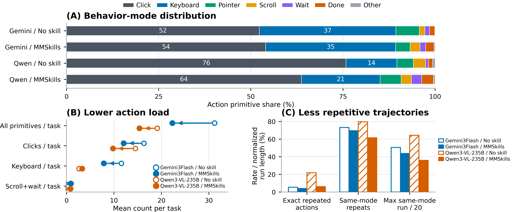
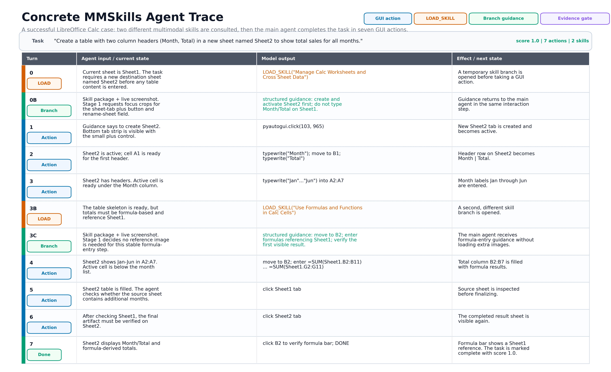

Multimodal skill packages
Each MMSkill binds a reusable textual procedure to state cards and visual keyframes that specify when to use the procedure, when to skip it, and how to verify progress.

1Shanghai Jiao Tong University
2Xiaohongshu Inc.
3Southeast University
*Work done during internship at Xiaohongshu Inc.,
‡Equal contribution,
✉Corresponding authors
Each MMSkill binds a reusable textual procedure to state cards and visual keyframes that specify when to use the procedure, when to skip it, and how to verify progress.
Public non-evaluation trajectories are grouped, merged, drafted, grounded, and audited into compact reusable skills rather than stored as raw demonstrations.
A temporary branch selects relevant state cards and views, aligns them with the live screenshot, and returns structured guidance to the main agent.
Four OSWorld case studies compare no-skill, text-only skill, and multimodal MMSkills runs with the same task instruction. The examples show how visual state cards help agents avoid repeated clicks, wrong routes, and misplaced GUI actions.

A concrete MMSkills example. A multimodal skill package combines a textual procedure, runtime state cards, and multi-view visual evidence. For the same chart-creation task, text-only guidance can miss the active sheet state, while branch-loaded MMSkills align skill evidence with the live screen and return state-aware guidance for the main agent.
The public Skill Library currently indexes 247 Ubuntu desktop MMSkills spanning browser, office, system, code editor, email, media, image-editing, and cross-application workflows.
Across GUI and game-based visual-agent benchmarks, MMSkills improves performance over no-skill and text-only skill conditions, especially for smaller or click-heavy visual agents.
| Benchmark | Model | No skill | MMSkills | Gain |
|---|---|---|---|---|
| OSWorld | Gemini 3.1 Pro | 44.08 | 50.11 | +6.03 |
| OSWorld | Gemini 3 Flash | 36.65 | 47.97 | +11.32 |
| OSWorld | Qwen3-VL-235B | 21.34 | 39.17 | +17.83 |
| OSWorld | Qwen3-VL-8B-Instruct | 10.78 | 25.40 | +14.62 |

Ablations show that runtime state cards, visual keyframes, branch loading, and view selection all contribute to effective multimodal skill use.
MMSkills does not only raise final success rate. It changes how agents behave: fewer low-level primitives, fewer repeated actions, stronger completion judgments, and more structured state-aware execution.

In representative OSWorld traces, the main agent acts directly when possible, consults skill branches at decision points, and receives compact guidance grounded in selected state cards and visual evidence.

git clone https://github.com/DeepExperience/MMSkills.git
cd towards_mmskills
python3 -m venv .venv
source .venv/bin/activate
pip install -r requirements.txt
python3 scripts/install_into_osworld.py /path/to/OSWorld --with-runner --with-skillspython run.py \
--agent_type mm_skill \
--model gpt-4o \
--api_backend openai \
--observation_type screenshot \
--action_space pyautogui \
--max_steps 20 \
--skills_library_dir skills_library \
--task_skill_mapping_root task_skill_mappings/task_skill_mapping.json \
--skill_mode multimodal \
--task_skill_top_k 6 \
--save_conversation_json \
--test_all_meta_path evaluation_examples/test_nogdrive.json \
--domain chrome \
--result_dir results/mm_skill_multimodal@software{mmskills2026,
title = {MMSkills: Towards Multimodal Skills for General Visual Agents},
year = {2026},
url = {https://github.com/DeepExperience/MMSkills}
}